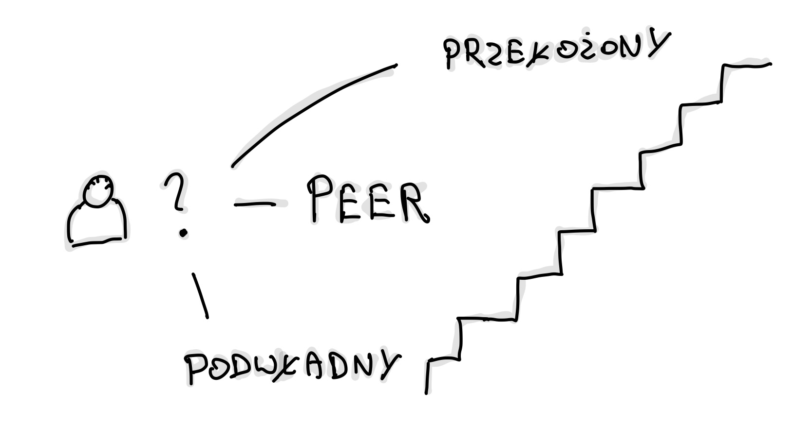
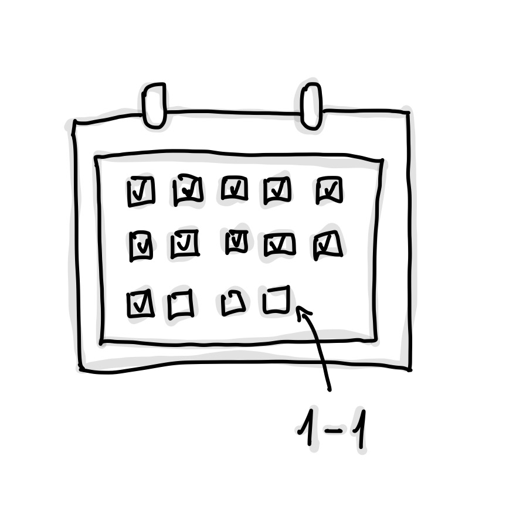
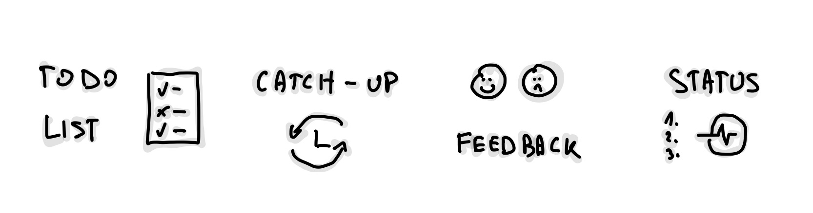

Spotkania one-on-one 101
One-on-one to typ spotkania, które budują relacje, wspierają rozwój i pozwalają porozmawiać o bieżących sprawach. Dzięki różnorodności stylów, takich jak lista TODO czy luźne catch-up'y, można dostosować formę rozmowy do swoich potrzeb. W materiale poruszam cel spotkań, optymalny czas (uwzględniając kalendarz), oraz z kim warto je przeprowadzać.
Dziś porozmawiamy o fragmencie z książki The Managers Path od Camille Fournier, a dokładniej o wycinku związanym z 1-1. Ta część książki jest bardzo bliska mojemu sercu.
Z uwagi na to, że pracuję głównie z zespołami z innych miast (czyli zdalnie), kawa w biurze czy spontaniczne podchodzenia do biurek są dla mnie z każdym rokiem coraz bardziej obce. Osobiście uważam, że sporo na tym tracę, nie żyjąc w mieście, gdzie jest większość mojego zespołu, ale muszę sobie z tym jakoś radzić. To decyzja, na którą się godzę, rozumiem co tracę, a co zyskuję.
Potrzebuję natomiast rozwiązania na moje potrzeby stąd i stawiam na one-on-one.
Cel spotkania¶
Jeśli nie miałeś styczności z tego typu formatem, to jest to nic innego niż pogadanka sam na sam (stąd te dwie jedynki w nazwie). Najbardziej typową relacją jest rozmowa pomiędzy menedżerem (liderem) a osobą "pod nim". Preferuje poza tego typu relacjami wybierać również te, które pomogą ci rozwijać się czy to technicznie, czy miękko, w oderwaniu od swojego macierzystego zespołu.
Cytując Marca Hedlunda:
Regular 1-1s are like oil changes; if you skip them, plan to get stranded on the side of the highway at the worst possible time.
Świetna analogia, prawda? Trudno się z nią nie zgodzić. Po pierwsze to idealne miejsce (możliwość) na prywatne przegadanie tematów, które powinny zostać omówione. Potrzeby, problemy, wyzwania, sukcesy, porażki, frustracje. Są tematy, które trzeba poruszyć i krępujące może być czasem pisanie o nich na czacie (nie daj ktoś zrobi zrzut ekranu!).
Brzmi jak sesja terapeutyczna? Może i trochę tak, natomiast z drugiej strony spektrum mamy rozwój, konsultacje (doradztwo) czy feedbacki.
Biorąc cytat od Camille:
For most people, good 1-1s are not status meetings. If you are a manager reporting up to senior management, you may use your 1-1 to discuss the status of critical projects, or projects that are still in the nascent stage where there’s not necessarily a lot written down yet. If you’re an individual contributor, though, a 1-1 as a status meeting is repetitive and probably boring.
Dla mnie spotkania typu 1-1, które kończą się statusem to żółta flaga i staram się z tym walczyć, kiedy tylko mogę. Jedną z metod jest przenoszenie tego typu dyskusji na planowania — łatwo jest ulec pokusie poświęcenia cennego czasu "sam na sam" na rozmowie o bieżących sprawach projektowych. Wrócimy do tego w ramach raportowania prac i daily rozmawiając o stylach różnych osób.
Po drugie to okazja na budowanie relacji. I nie mówię tutaj o spędzeniu całego przeznaczonego czasu na hobby czy rodzinę albo pogaduchy o ostatnich wakacjach, natomiast o dodanie szczypty swojego prywatnego życia, tak żeby mniej więcej czuć kontekst sytuacji. Dobry menedżer zauważy spadek twojej energii prawie na pewno, więc trzymam tylko kciuki, żeby miał odwagę i chęci zapytać, czy wszystko jest okej, bo sytuacje w życiu są różne. Śmierć, dziecko, wypalenie, zmęczenie materiałem, rozstanie.
Z kim warto.¶
Drabinka korporacyjna ma trzy kierunki — do wyboru jest osoba na twoim poziomie kariery (peer), niższym, czyli pod (podwładny) oraz wyższym, czyli nad (przełożony). O pomijaniu szczebli porozmawiamy na koniec w skip level.

Decyzje musisz podjąć sam. Zachęcam cię obowiązkowo do posiadania 1-1 z przełożonym oraz jeśli jesteś liderem to z osobami składającymi się na twój zespół.
Oto kilka pomocniczych pytań, które mogą pomóc w decyzji czy warto spotykać się z daną osobą:
-
Jak często bezpośrednio kontaktujesz się z tą osobą w ciągu tygodnia?
-
Jak dobre są twoje stosunki z nią?
-
Jak dużo wsparcia potrzebuje ta osoba / ty?
-
Jak dużo informacji przekazuje ci ta osoba / jak dużo ty przekazujesz jej?
Z czasem wypracowanie listy będzie przychodzić łatwiej. Będziesz czuł, gdzie jest wartość (lub kto ma wartość ze spotkania z tobą), a gdzie jej nie ma.
Kiedy¶
Mówi się, że poniedziałki i piątki to z reguły niebezpieczne terminy na 1-1 z uwagi na przedłużanie weekendów (urlopy jednodniowe). Postaraj się więc zaplanować je na godzinę i dzień, która pasuje zarówno tobie, jak i osobie, z którą rozmawiasz. Jeśli to możliwe, spróbuj zorganizować to w dni, kiedy chodzicie do biura.
Ja wolę robić je po południu — poranki staram się poświęcać na "intensywną pracę" (wykluczając daily), czyli budowanie produktów, programowanie, pisanie, nauka, czytanie. Ma to kilka mankamentów, między innymi to, że w natłoku pracy łatwiej jest o przekładanie, przesunięcia, odwoływanie — "muszę wyjść szybciej", jest coś "bardziej pilnego". W skrócie inne sprawy.

Jedna zasada tutaj — szanuj harmonogram drugiej osoby. Ważne, żeby wasze spotkanie nie wpadło w środek waszych produktywnych godzin pracy. Zazwyczaj na pierwszym takim pytam, jakie są jej preferencje czasowe, a na koniec dopytuje, w jakiej częstotliwości moglibyśmy się spotykać.
Nie można zapomnieć również o wrzutkach, czyli ad-hoc'owych spotkaniach z ludźmi, z którymi nie pracujesz na co dzień, lub robisz to po prostu rzadko. Do przykładów mogę zaliczyć wyjaśnianie feedbacków po performance review, mentoring w oderwaniu od zespołu w ramach szybkiej porady itd.
Ustawianie spotkań 1-1 w blokach również pomaga. Jeśli masz swój zespół, to układanie jednego po drugim pomoże w utrzymaniu czasu, tak żeby się niepotrzebnie nie rozciągały. To moja słabość — jak rozmawiam z osobą, z której aż kipi wiedzą, trudno jest mi po 30 minutach się pożegnać.
W jakim stylu¶
Z jakimi rodzajami się spotkałeś? Mam nadzieje, że odpowiedź nie brzmi "z żadnymi, bo nie mamy w organizacji kultury tego typu spotkań". Jeśli jednak tak jest, to mam nadzieję, że poniższa lista przybliży ci nieco samą koncepcję i pozwoli wybrać pasujący styl do twojego charakteru. Pamiętaj, że wypracowanie charakteru spotkania nie leży po jednej konkretnej stronie.
Miej w głowie zwrot:
It is not your manager’s job to completely control the 1-1 agenda (sometimes it will)
Osobiście staram się zawsze przychodzić z agendą. Nie z każdą osobą potrafię zebrać wystarczającą ilość tematów, ale zazwyczaj odrabiam zadanie domowe. Jeśli temat nie jest poufny, to na kilka godzin przed spotkaniem wysyłam listę rzeczy, które chciałbym dziś poruszyć.

Rzadko kiedy jest też tak, że czasu wystarcza na wszystkie tematy — i to jest całkowicie normalne. Lepiej mieć za dużo niż za mało. Jak coś jest dla mnie ważne, to po prostu daje to wyżej na liście.
Przechodząc więc do metodyk, z którymi się spotkałem:
-
TODO list — Zachęcam cię do dzielenia się "odpowiedzialnością" przygotowywania 1-1 ze swoim przełożonym. Przygotuj listę tematów, na których ci zależy. Zarządzaj czasem spotkania. Pamiętaj, że ono jest nie tylko dla jednej strony — przyszliście porozmawiać i macie oboje tematy.
Jak budować listę? Zbieram tematy z całego tygodnia (lub miesiąca). Niewyjaśnione sprawy, ciekawostki, rzeczy, o które chce poznać opinię itd.
W gronie osób, z którymi robię dziś spotkania, są głównie jednostki starsze ode mnie doświadczeniem życiowym i profesjonalnym, więc jest czego się uczyć.
Typ ten jest najlepiej opisany w tym wpisie, bo go po prostu stosuję aktualnie. Na mojej TODO zazwyczaj poza zebranymi tematami znajdują się sekcje (w szablonie):
- "(Nakierowana) kawa" - czyli takie lean coffee 1-1. Jakaś ciekawostka z ostatnich dni na podstawie podcastu, książki, filmu, czasem prywata. Small talk pomaga mi na rozgrzewkę przy mniej rozmownej osobie. Pilnuj natomiast czasu - gaduły lubią przepalać go tutaj.
Część osób woli ten fragment robić na koniec, bo nigdy nie wiesz ile czasu zostanie. Ploteczki, luźne opinie o organizacji itd. Czyli najpierw relacja profesjonalna a potem koleżeńska. Zastanów się, którą czapkę chcesz nałożyć najpierw. - "Jakie są twoje tematy do mnie" - warto jest dać się wypowiedzieć drugiej stronie najpierw jeśli ty masz dużo tematów. Jeśli jesteś liderem to tym bardziej. Po prostu pozwolić się jej wystrzelać z tematów.
Z czym przychodzą ludzie? "Ciężko mi się dogadać z X", "zadałem pytanie i od 3 dni wisi… potrzebuje eskalacji", "chciałbym zmienić zespół, pójść na turystykę", "jestem zmęczony stosem technologicznym i produktem", "czy możemy zorganizować warsztat z Y".
Weź pod uwagę również, że cisza może wynikać z introwertyczności. Jak przyjdziesz z górą pytań i nie dasz miejsca drugiej osobie się wypowiedzieć to dużo tracisz. Naucz się w ciszę i czuj z nią komfortowo - to instrument również do wyciągania informacji. Prędzej czy później ktoś coś powie. - (opcjonalnie) Feedback - "Czy zauważyłeś ostatnio u mnie jakieś niepokojące zachowania", "Czy jest coś co ostatnio robię wyjątkowo dobrze" itd.
Czyli o postawie, dostarczaniu, podejściu czy mentalności. Ważne żeby to nie była laurka, a bardziej forma "start, stop, continue". To też miejsce gdzie ty możesz dać drugiej stronie kilka słów otuchy. - Mentoring miękki i twardy - porozmawiajmy o tematach, które są dla nas ważne. O przemyśleniach, poznawaniu drugiej perspektywy itd. Rzeczy, które możemy robić lepiej jako zespół oraz jednostki. Może jakiś ważny dla ciebie cytat z książki, o który chcesz podpytać. Planowanie celów rocznych. Nowa technologia, wzorzec - można wymieniać długo.
- (opcjonalnie) Status - niezalecane na niższych szczeblach
Część osób również zapisuje "co zostało powiedziane" i stara się notować rzeczy do zrobienia (action point-y). Uważam, to za najwyższy poziom wtajemniczenia. A jak czytasz je na koniec na głos? Chapeau bas.
Natomiast jeśli zabrakło ci czasu na wszystko to, co robić? Masz trzy opcje:
- dogrywka ważnych tematów (mało kiedy występuje),
- przeniesienie tematu na kolejne spotkanie (mój faworyt),
- dogadanie offline.
A co z przypadkiem, kiedy skończyły ci się tematy po 10 minutach? Tak też bywa. Jeśli to jest format, który wam odpowiada, to co ja będę mówić tutaj jak robić. Może być to natomiast sygnał — ktoś może nic nie mówić, a potem się zwalnia.
- "(Nakierowana) kawa" - czyli takie lean coffee 1-1. Jakaś ciekawostka z ostatnich dni na podstawie podcastu, książki, filmu, czasem prywata. Small talk pomaga mi na rozgrzewkę przy mniej rozmownej osobie. Pilnuj natomiast czasu - gaduły lubią przepalać go tutaj.
-
Catch-up — drugi format po liście, czyli format z ograniczonym formatem. W skrócie patrzysz, z czym przyjdzie do ciebie druga osoba na konsultacje. Część osób dodaje punkt z poprzednika, czyli zebrane tematów z całego tygodnia. Nazywany czasem po angielsku "driven by flow". Luźny i w mojej opinii czasem lubi przekształcić się w narzekanie i dramaty.
Jedna rada od Camille w ramach narzekania:
Try not to make every 1-1 about how you need something, how something is wrong, or how you want something more. When you have a problem, instead of demanding that your manager solve it for you, try asking her for advice on how she might approach the problem. Asking for advice is always a good way to show respect and trust."
-
Feedback loop — dla mnie to ad-hoc'i. Wyjaśnianie feedbacku po performance review czy przychodzenie po feedback do osoby, od których trudno o pisemny. Ważny aspekt dla mnie to również reagowanie na nieakceptowalne sytuacje tak szybko, jak tylko to możliwe (natychmiast!).
-
Status meeting / progress report — tak długo, jak nie masz pod sobą innych menedżerów, to dla mnie żółta flaga jak już wcześniej sobie powiedzieliśmy. Status od ludzi, z którymi pracujesz bezpośrednio to zazwyczaj strata czasu, bo to delta z pracy od ostatniego daily, czyli niewiele. Kiedy w zespole jest duży chaos lub potężne tempo wdrożeniowe, to rozumiem okazjonalne dopytywania i wyjaśnienia — jest to swego rodzaju trytytka na pośpiech.
Do zastanowienia zostawiam ci czy nie masz z tą osobą innych, równie ważnych tematów do przepracowania poza statusowaniem. Pomyśl również o perspektywie drugiej osoby, czyli "po co mam się powtarzać". Możesz wzbudzić frustracje i okazać brak zaufania.
-
Get to know — ten format włożyłem wyżej jako podpunkt w moim TODO, czyli kawa. Jest to też miejsce na budowanie relacji, o której już sobie powiedzieliśmy w ramach celów — sytuacje w życiu bywają różne i o tym warto nie zapominać. Część osób robi również wtedy spacerowe 1-1, czyli idą razem się przejść albo jedzą razem obiad, zamiast siedzieć w salce. Życzę tobie takich jak najwięcej.
-
Mix — jak pewnie już zauważyłeś, moja TODO lista wplata większość tych typów. Może nie powinienem nazywać tego listą? Może będzie ci dane zmieszać "Get to know" z "Feedback loop". Może zrobicie sobie status podczas wspólnego obiadu. Eksperymentuj.
Skip level meetings¶
Nie miałem zbyt wielu okazji do uczestniczenia w tego typu spotkaniach, ale kilka zorganizowanych przeze mnie wspominam bardzo ciepło (nie używałem pytań pomocniczych poniżej — były to sesje mentorskie).
Czym są? To inicjatywa przede wszystkim dla menedżerów, którzy kierują innymi liderami. Raz na kwartał (w zależności od liczby osób, które masz pod sobą) organizujesz spotkanie z osobami, z którymi nie pracujesz bezpośrednio. Dosyć trudne jest to do wyskalowania, bo jeśli masz 60 osób, to musiałbyś codziennie mieć z kimś. Spotkania tego rodzaju mogą być nie tylko okazją do zrozumienia obecnej sytuacji w zespołach, ale także do budowania silniejszych relacji z pracownikami.
Kilka pytań pomocniczych z książki, które można zadać na tego typu spotkaniach jako senior menedżer:
-
Jak zadowolony jesteś z pracy? Co moglibyśmy zrobić, aby praca w organizacji była przyjemniejsza?
-
Co najbardziej/najmniej ci się podoba w projekcie, nad którym aktualnie pracujesz?
-
Jakie zmiany uważasz, że moglibyśmy wprowadzić w produkcie czy organizacji?
-
Czy masz jakieś opinie na temat swojego bezpośredniego przełożonego – co idzie dobrze, a co nie? Kto w twoim zespole ostatnio wykazał się szczególnie dobrą pracą?
-
Jak sądzisz, jak cała organizacja sobie radzi? Czy są jakieś problemy, czy szanse, które według ciebie mogliśmy przeoczyć?
-
Czy jest coś, co moglibyśmy robić lepiej/więcej/mniej?
-
Czy są obszary strategii biznesowej, których nie rozumiesz?
-
Czy są takie rzeczy, które powstrzymują cię dziś przed różnymi inicjatywami?
Mam nadzieję, że udało mi się zachęcić cię do 1-1. Nie sądziłem, że będę o tym pisać. Dla mnie to świetne narzędzie, które pozwala mi stawać się lepszym inżynierem oraz człowiekiem. Trzymam kciuki za twoje przyszłe spotkania. Jeśli coś byś tu dodał lub nie zgadzasz się z fragmentami, to złapmy się na LinkedIn.
Utworzony: 14.02.2024